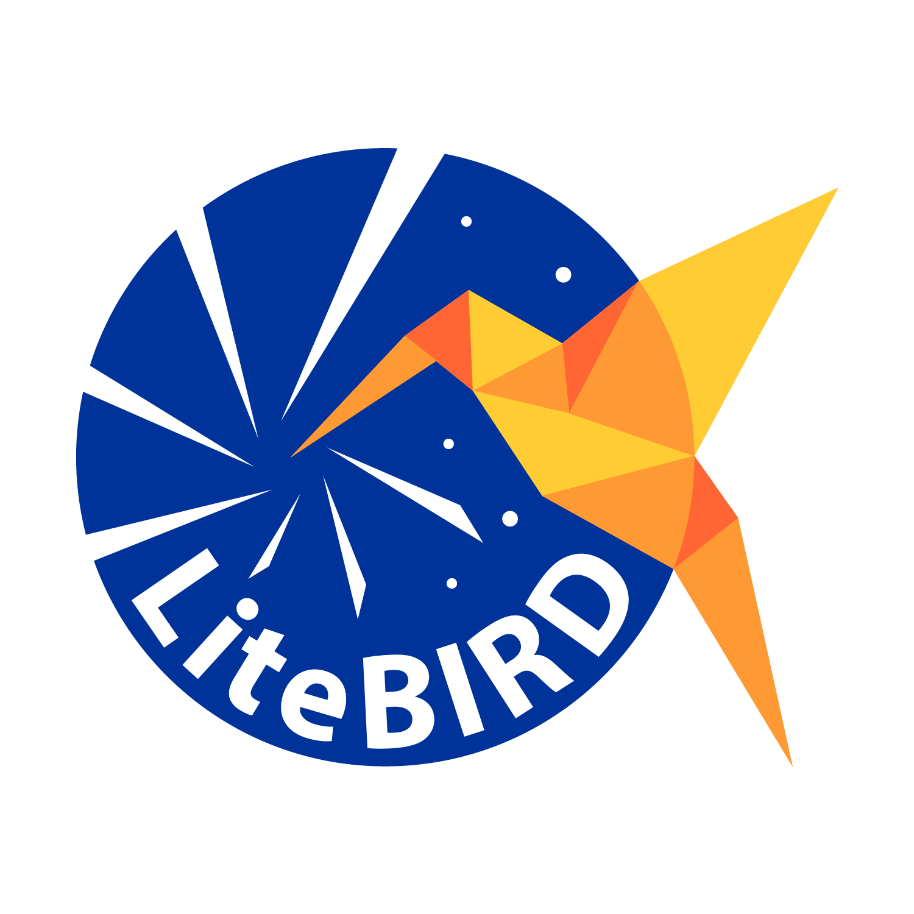

Observational Cosmology • CMB Polarization • LiteBIRD Collaboration
01 / About Me
I am a PhD student in Astronomy, Astrophysics and Space Science at Sapienza Università di Roma, working under the supervision of Prof. Francesco Piacentini. My research lies at the intersection of observational cosmology, precision instrumentation, and modern data analysis.
I work on the Cosmic Microwave Background (CMB) — the relic radiation from the Big Bang — with a focus on characterising systematic effects that could contaminate the detection of primordial gravitational waves through B-mode polarisation. I am an active member of the LiteBIRD collaboration, a JAXA-led strategic space mission targeting δr < 0.001 for the tensor-to-scalar ratio from the Sun–Earth L2 Lagrange point.
I hold a Bachelor's degree in Physics and a Master's degree in Astronomy and Astrophysics with honors, both from Sapienza. Born in the United Kingdom, I have been based in Rome for most of my life.
Outside research, I am a competitive volleyball player at regional level (FIPAV Lazio) and coach a youth male team — a passion for sport that mirrors my belief in collaboration, discipline, and continuous improvement.
Affiliation
Sapienza Università di Roma
Dept. of Physics · INFN Roma 1
INAF – Obs. Astronomico di Roma
Outreach partner · Monte Porzio Catone & Monte Mario
LiteBIRD Collaboration
JAXA L-class space mission
Education
PhD — Astronomy, Astrophysics & Space Science
Sapienza Università di Roma · in progress
MSc — Astronomy & Astrophysics
Sapienza Università di Roma
BSc — Physics
Sapienza Università di Roma
PhD Supervisor
Prof. Francesco Piacentini
Sapienza Università di Roma
02 / Research
The Cosmic Microwave Background encodes the universe's earliest moments. My work targets the B-mode polarization signal — a faint imprint of primordial gravitational waves generated during cosmic inflation. To detect this elusive signal, my research focuses on instrument definition and requirements, alongside advanced data analysis techniques to disentangle the primordial signal from instrumental systematics and astrophysical foregrounds such as galactic dust and synchrotron emission.

LiteBIRD (JAXA L-class, launch ~mid-2030s) will operate from the Sun–Earth L2 point for three years, covering 15 frequency bands between 34 and 448 GHz across three telescopes. I contribute to systematic effect characterisation and mitigation, ensuring optical components meet the mission's unprecedented sensitivity requirement of ~2.2 µK·arcmin.
Technical Stack
03 / Publications
Peer-reviewed articles · most recent first
S. Stellati, F. Piacentini, S. Micheli, A. Novelli, F. Columbro, A. Coppolecchia, P. de Bernardis, S. Masi, M. Najafi, A. Occhiuzzi, L. Pagano, A. Paiella, LiteBIRD Collaboration
Journal of Cosmology and Astroparticle Physics · JCAP02(2026)003 · February 2026
We characterise systematic errors arising from a constant "wedge-like" misalignment between the rotation and optical axes of a reflective Half-Wave Plate. Using the LiteBIRD simulation framework, we show this introduces HWP-synchronous pointing offsets that primarily mimic lensing B-modes rather than primordial tensor modes, and derive strict upper limits on the allowable misalignment angle to meet mission requirements.
LiteBIRD Collaboration (K. Aizawa, H. Akamatsu, R. Akizawa, …, S. Stellati, … et al., 150+ authors)
Proc. SPIE — Astronomical Telescopes + Instrumentation 2026 · July 2026
Comprehensive overview of the updated LiteBIRD mission concept following reformation activities after the 2024 Mission Definition Review. The revised payload uses a single cross-Dragone telescope covering 12 frequency bands (40–402 GHz), targeting δr < 0.002 from the Sun–Earth L2 point.
S. Vinzl, J. Aumont, L. Vacher, R. T. Génova-Santos, D. Adak, A. Rizzieri, …, S. Stellati, … et al. (86+ authors, LiteBIRD Collaboration)
Submitted to Journal of Cosmology and Astroparticle Physics · July 2026
Forecast of LiteBIRD's ability to characterise polarised dust and synchrotron emission in the diffuse ISM using angular power spectra across 15 frequency bands. Demonstrates that LiteBIRD will measure dust temperature, spectral indices, and spatial correlation with unprecedented precision, opening a new window on the physical conditions of the Milky Way's ISM.
04 / Timeline
Conferences, workshops, contributed talks & research visits · most recent first
Dotcampus · Roma, Italy 🇮🇹
Five days of lectures and hands-on sessions, from classical statistics to Bayesian inference, from neural networks to AI agents, from Monte Carlo techniques to optimization approaches.
Chino Cultural Complex · Nagano Prefecture, Japan 🇯🇵
International workshop on next-generation CMB science. Poster presentation : "Absolute Polarization Angle Requirements for LiteBIRD", presenting results from ongoing work.
Chino Cultural Complex · Nagano Prefecture, Japan 🇯🇵
International workshop on next-generation CMB science. Contributed talk: "Systematic effects from HWP misalignment in LiteBIRD", presenting results from the JCAP 2026 paper and ongoing work.
University of Tokyo · Kashiwa, Japan 🇯🇵
Three-month research visit collaborating with the Kavli IPMU LiteBIRD group on systematic effect modelling, simulation pipeline development, and data analysis, in close cooperation with JAXA mission scientists.
INAF Astronomical Observatory of Capodimonte · Napoli, Italy 🇮🇹
This four-day school offers an overview of essential machine learning concepts and techniques, structured to build knowledge progressively.
earlier events not shown — full history on NASA ADS
05 / Outreach
INAF – Osservatorio Astronomico di Roma
I regularly participate in public engagement activities organised by the INAF Astronomical Observatory of Rome at both the Monte Porzio Catone and Monte Mario sites. These include public observation nights, guided talks and school outreach programmes — making frontier astrophysics accessible and inspiring for audiences of all ages.
FIPAV Lazio · ISVF
Outside the lab, I compete in the Italian volleyball federation (FIPAV Lazio) at regional level. In parallel, I coach a youth male team, channelling my passion for sport into mentoring the next generation of players. Both roles reflect my deep commitment to teamwork, discipline, and community beyond academia.
Sapienza Università di Roma · Terza Missione
I participate in CoDiC3 (Contrasto alle Discriminazioni, Carcere ed Eguaglianza), a Sapienza outreach initiative bringing science communication and cultural activities inside Italian correctional facilities. Rooted in Articles 3 and 27 of the Italian Constitution, the project promotes equality of access to knowledge for incarcerated people through lectures, multimedia labs, and virtual museum visits — working across institutions including Rebibbia and Velletri.
06 / Contact
Happy to discuss research collaborations, outreach opportunities, or any questions about my work.
simone.stellati@uniroma1.it
ORCID
0000-0002-3234-4807
GitHub
@stellatisimone
/in/simone-stellati
NASA ADS
Astrophysics Data System
arXiv
Preprints
Academic curriculum vitae · last updated Jul 2026